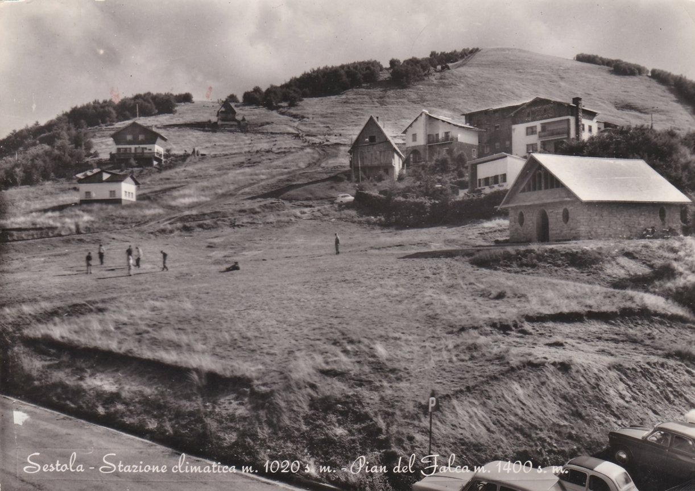
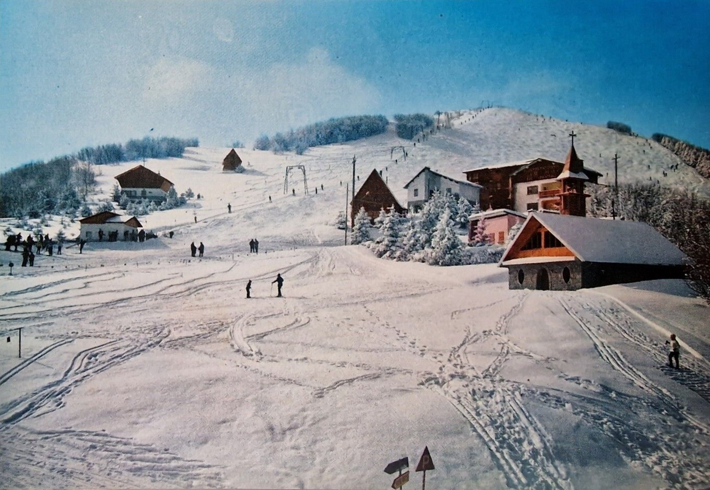
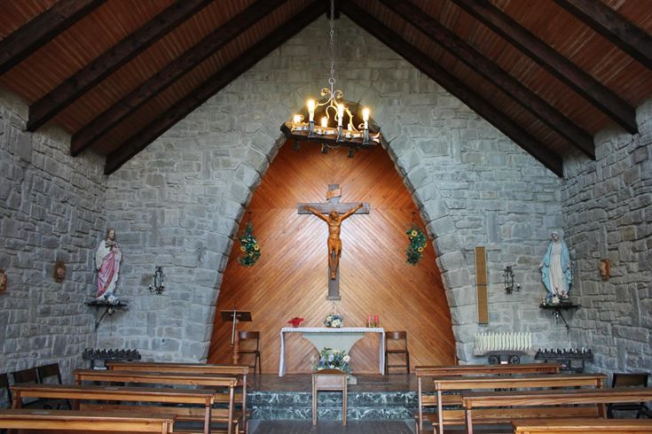

La chiesetta di Pian del Falco si trova di fronte al Rifugio Calvanella ed è caratterizzata da uno stile semplice ma molto caratteristico per via del tetto spiovente e delle dimensioni contenute.
L'oratorio della Santa Croce (questo il suo nome completo) è stato edificato tra il 1950 e il 1959. Purtroppo non si hanno molte altre informazioni riguardo la sua storia, ma dalle fotografie storiche e dai documenti risulta che inizialmente fosse composto solo dal fabbricato principale e che solo successivamente sia stata aggiunta la piccola torre campanaria.

Riporto qui di seguito una descrizione architettonica del fabbricato che è disponibile sul sito web delle chiese e delle diocesi Italiane.
L'oratorio della Santa Croce, nella località di Pian del Falco, nel Comune di Sestola, si presenta semplice, a capanna e di modeste dimensioni. La chiesetta è ad aula rettangolare, presenta una muratura in pietra arenaria sbozzata a vista, la copertura con falde con inclinazione molto accentuata la rende simile a una baita di alta montagna. In facciata troviamo il portale archivoltato con portone in legnami, affiancato da due finestre a ellisse; al di sopra una grande vetrata triangolare è intervallata da pilastrini in arenaria, al centro la "Santa Croce". Affiancato al lato sud spicca uno snello campaniletto, struttura probabilmente in cemento armato e rivestita da arenaria locale, concluso da irta guglia e croce ferrea. Internamente l'oratorio lasciato a muratura a vista, presenta due ambienti: l'aula a pianta rettangolare separata dal presbiterio da un muro con ampio arco in blocchi in pietra. La copertura lasciata a vista è formata dalla trave di colmo e i travetti lignei, il tavolato è in tavelloni laterizi, il manto in guaina bituminosa.

Sempre nello stesso sito è riportato anche che nel periodo (1970-1980) sono state fatte delle modifiche interne, nel presbiterio: la zona presbiteriale, rialzata da due gradini in marmo nero, presenta centrale l'altare in pietra arenaria. Il leggio in legno alla destra del celebrante e la sede alle sue spalle. Non è chiaro però se queste modifiche riguardino la sola aggiunta dell'arredo o se abbiano comportato anche la costruzione dei gradini...
